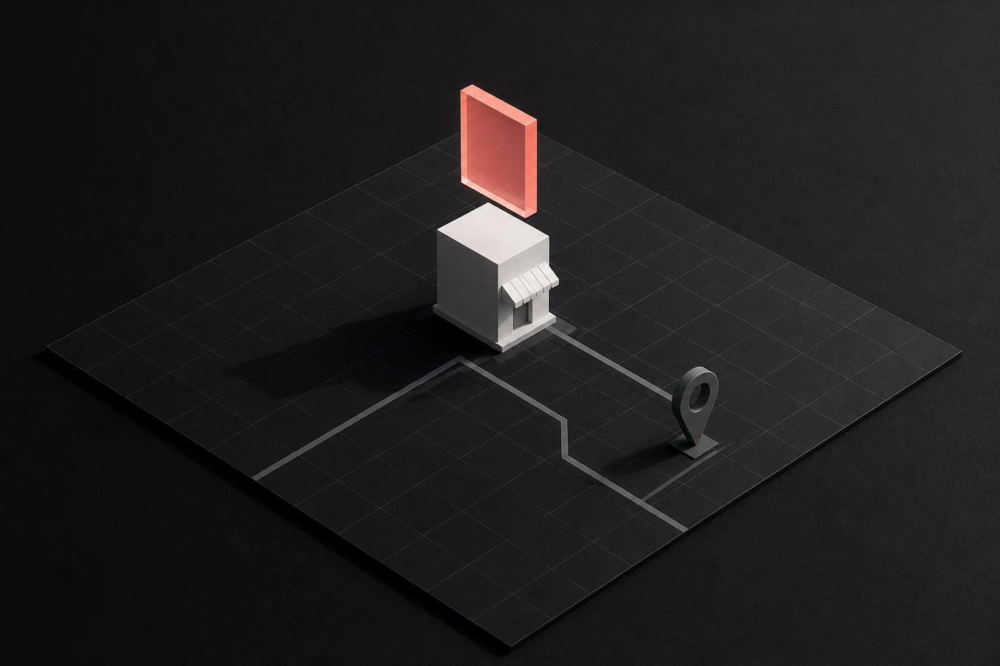

온누리상품권이 18년 만에 바뀝니다 — 지도에서 우리 가게가 보이게 하는 준비
온누리상품권이 18년 만에 개편됐습니다. 전통시장에서 쓰면 10%, 지방 골목상권은 8% 혜택을 받습니다. 지도 앱에서 가맹점을 찾게 하는 작업도 함께 추진되고 있어, 가맹 여부가 곧 검색 노출이 됩니다. 우리 가게가 해당되는지 확인하는 순서를 정리했습니다.

온누리상품권이 18년 만에 바뀌었습니다. 전통시장에서 쓰면 10%, 지방 골목상권에서 쓰면 8% 혜택을 받는 구조로 바뀌었고, 이 상품권을 지도 앱에서 찾을 수 있게 하는 작업도 함께 추진되고 있습니다.
쉽게 말하면 이렇습니다. 손님이 지도에서 "온누리 되는 곳"을 찾는 날이 오면, 가맹점이 아닌 가게는 그 검색에서 아예 빠집니다. 상품권을 안 쓰는 손님에게도 마찬가지입니다. 검색 결과에 없으면 후보에 오르지 못합니다.
무엇이 달라졌나#
가장 큰 변화는 어디서 쓰느냐에 따라 혜택이 달라진다는 점입니다. 예전에는 어느 지역, 어느 가게에서 쓰든 할인율이 같았습니다. 그래서 전통시장과 대형 가맹점이 같은 혜택을 받았습니다.
| 사용처 | 구매 할인 | 사용 후 환급 | 합계 |
|---|---|---|---|
| 전통시장 | 5% | 5% | 10% |
| 지방 골목상권(골목형상점가) | 5% | 3% | 8% |
| 그 밖의 가맹점 | 종전과 동일 | 해당 없음 | — |
같은 10만 원을 써도 전통시장에서 쓰면 1만 원, 지방 골목상권에서 쓰면 8천 원이 돌아옵니다. 손님 입장에서는 "어디서 쓸까"를 계산하게 되고, 가게 입장에서는 그 계산에 들어야 손님이 옵니다.
대상도 좁아졌습니다. 연매출 30억 원 이하 가맹점 중심으로 운영되고, 병·의원과 법무·회계·세무 같은 전문서비스업은 가맹이 제한됩니다. 약국은 전통시장·상권 안에서 손님을 모으는 효과를 고려해 허용됩니다. 기업형 슈퍼마켓(SSM)도 가맹을 제한하는 방향이 추진되고 있습니다.
우리 가게가 해당되는지 3분 확인#
세 가지만 보면 됩니다.
- 매출 규모 — 연매출 30억 원 이하인가. 대부분의 동네 가게는 해당됩니다.
- 업종 — 병·의원, 법무·회계·세무처럼 전문서비스업으로 분류되면 제한됩니다. 약국은 예외입니다.
- 위치 — 전통시장 안이거나, 시·군이 지정한 골목형상점가 안인가. 여기가 가장 헷갈리는 부분입니다.
세 번째가 중요한 이유는, 온누리 혜택이 사용처 기준으로 갈리기 때문입니다. 같은 골목인데 상점가 지정 구역 안과 밖이 나뉘는 경우가 있습니다. 지정 현황은 지자체 상권 담당 부서나 소상공인시장진흥공단 안내로 확인할 수 있습니다.
또 하나, 골목형상점가 지정 기준이 지방정부의 재정 여건에 따라 차등 적용됩니다. 지방일수록 지정 문턱이 낮아지는 방향이라, 같은 조건이어도 지역에 따라 결과가 다를 수 있습니다. 우리 동네 기준을 따로 확인해야 하는 이유입니다.
지도에서 보이게 하는 네 단계#
가맹점이 되는 것과 지도에서 잘 보이는 것은 다른 문제입니다. 손님은 "온누리"를 찾다가 결국 가게 이름과 사진을 보고 누를지 정합니다.
- 가맹 등록 상태를 먼저 확인합니다. 가맹점인데 지도에 안 뜨는 경우가 있고, 예전에 등록했는데 갱신이 안 된 경우도 있습니다. 등록이 3년마다 갱신되는 구조라, 요건을 채운 가게는 자동 갱신으로 바뀌는 방향도 함께 추진되고 있습니다.
- 상호·주소·전화번호를 한 글자까지 맞춥니다. 상품권 안내, 지도, 명함, 영수증의 이름이 다르면 손님은 같은 가게로 보지 않습니다. 특히 도로명 주소와 손님이 부르는 동네 이름이 다르면 둘 다 적어 두세요.
- 영업시간과 휴무를 최신으로 둡니다. 상품권을 들고 갔는데 문이 닫혀 있으면 그 손님은 다시 오지 않습니다. 임시휴무도 공지로 남기면 손님이 헛걸음하지 않습니다.
- 사진 세 장을 채웁니다. 입구, 안쪽 좌석이나 진열, 그리고 가맹점임을 알 수 있는 스티커나 안내판. 새로 촬영할 필요는 없습니다. 이미 가진 사진으로 충분합니다.

검색이 바뀌면 글도 바뀝니다#
지도에서 찾는 손님은 글을 읽지 않습니다. 대신 짧은 정보를 봅니다. 그래서 블로그 글도 두 종류로 나눠 쓰는 편이 좋습니다.
- 지도용: 가게 소개 첫 두 줄에 "온누리상품권 사용 가능", 주차, 대표 메뉴 하나. 이 세 개면 끝냅니다.
- 검색용: "○○시장 근처", "골목형상점가" 같은 지역 이름을 넣은 글. 손님이 상품권을 들고 어디로 갈지 찾을 때 걸리는 글입니다.
지역 글은 한 달에 두세 편이면 충분합니다. 매일 쓰면 광고로 읽히고, 한 편도 안 쓰면 검색에 남는 글이 없습니다.
노티스랩이 이 준비에서 먼저 보는 것#
노티스랩이 가게를 볼 때 처음 확인하는 것은 화려한 문구가 아니라 손님이 도착할 수 있는 정보가 다 있는지입니다. 상호, 주소, 영업시간, 주차, 결제수단, 사진. 이 여섯 개가 비어 있으면 어떤 광고를 해도 손님은 중간에 멈춥니다.
상품권 이야기도 같습니다. 혜택이 좋아도 "그 가게가 어디고 몇 시에 여는지"가 없으면 손님은 다음 후보를 누릅니다. 그래서 저희는 새 촬영 없이, 가게가 이미 가진 사진과 정보만으로 이 여섯 칸을 채우는 일부터 시작합니다.
주의할 점#
첫째, 시행 시점은 확정되지 않았습니다. 개편 방안은 2026년 10월 1일 발표됐지만, 차등 환급과 지도 앱 연계가 언제부터 실제로 작동하는지는 공개 자료로 확인되지 않았습니다. 발표 내용과 현장 시행 사이에 시차가 있을 수 있습니다.
둘째, 지도 반영 시점도 알 수 없습니다. 플랫폼마다, 지역마다 다릅니다. 가맹 등록을 해도 지도에 바로 뜨지 않을 수 있습니다.
셋째, 혜택은 매출을 보장하지 않습니다. 상품권을 쓰는 손님은 늘 수 있지만, 그 손님이 다시 오는지는 가게 경험과 가격이 정합니다. 할인만 보고 온 손님은 할인이 끝나면 떠납니다.
넷째, 업종별 차이가 큽니다. 장을 보는 손님(식료품·반찬·정육)은 상품권 효과가 바로 나타나지만, 예약형 업종(미용·공방)은 상품권보다 예약 편의가 더 중요합니다.
다섯째, 확인되지 않은 수치를 쓰지 마세요. "상품권 쓰는 손님이 몇 배 늘었다" 같은 숫자는 공개 자료로 확인되지 않습니다.
자주 묻는 질문#
온누리상품권 가맹점이 되면 매출이 늘어나나요?#
늘어날 수는 있지만 보장되지 않습니다. 상품권을 가진 손님이 가게를 찾을 때 후보에 오르는 것이지, 손님이 반드시 오는 것은 아닙니다. 같은 조건에서 사진과 정보가 잘 정리된 가게가 먼저 선택됩니다.
가맹점 등록은 어디서 하나요?#
가맹 신청은 온누리상품권 공식 채널과 지자체 안내를 통해 이뤄집니다. 등록 전에 연매출 규모와 업종 제한을 먼저 확인하세요. 전문서비스업으로 분류되면 신청이 제한됩니다.
지도 앱에서 우리 가게가 안 보입니다. 왜 그런가요?#
가맹 등록이 안 됐거나, 상호·주소가 지도 정보와 달라서일 수 있습니다. 반영에는 시간이 걸리며, 플랫폼마다 시점이 다릅니다. 상호와 주소를 한 글자까지 맞추고, 가게 정보를 직접 수정 요청하는 방법부터 확인하세요.
골목형상점가가 아니면 혜택이 없나요?#
전통시장이나 골목형상점가가 아니면 차등 혜택(10%·8%)은 적용되지 않습니다. 다만 가맹점 자체로 운영되는 경우가 있으니, 우리 동네 지정 현황과 가맹 조건을 함께 확인하는 편이 정확합니다.
마무리#
상품권 혜택은 제도가 정합니다. 하지만 손님이 그 혜택을 쓰러 어느 가게를 고를지는 가게가 정합니다.
지금 할 일은 하나입니다. 우리 가게가 어느 구역에 속하는지, 가맹 등록이 살아 있는지 확인하는 것. 그다음에 상호·주소·시간·사진 네 칸을 채우는 것.
가게 링크만 카카오톡 채널 (새 탭에서 열림)로 보내 주시면, 지금 지도에서 보이는 정보 중 무엇이 비어 있는지 편하게 짚어 드릴게요. 새로 촬영하지 않고 있는 사진만으로 정리해 드립니다.
KEEP READING
이어서 읽기
같은 흐름에서 이어지는 글입니다. 지금 매장에 해당하는 지점부터 읽으시면 됩니다.
경기 남부 여덟 개 시가 역할을 나눴습니다 — 동네마다 손님의 시간표가 다른 이유
11월 17일 경기도와 8개 시가 반도체클러스터 공동 지정을 추진했습니다. 수원은 연구, 성남은 설계, 용인·화성·이천·평택은 제조, 안성·오산은 소부장입니다. 역할이 다르면 손님이 가게를 찾는 시간과 단어도 달라집니다.

지도 필터에서 빠진 가게는 목록에 없습니다 — 사장님이 켜야 하는 다섯 칸
손님은 '수원 단체석'을 검색어로 치지 않고 지도 필터를 켭니다. 네이버 지도·카카오맵 필터에 우리 가게가 걸리려면 어떤 칸을 채워야 하는지, 오늘 30분 안에 점검할 다섯 칸을 정리했습니다.